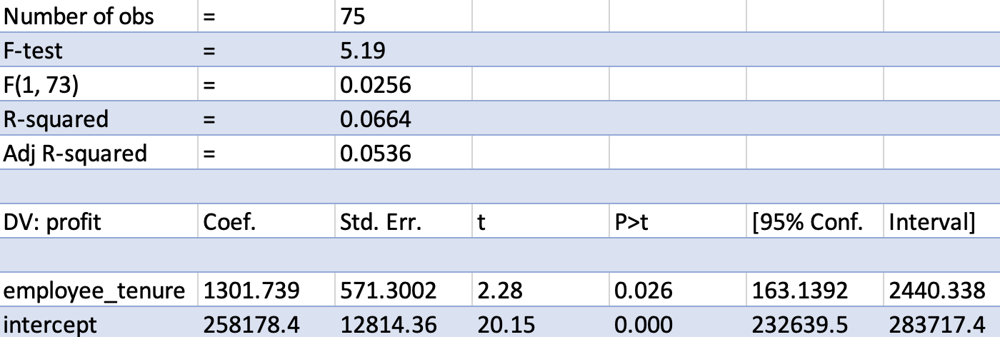
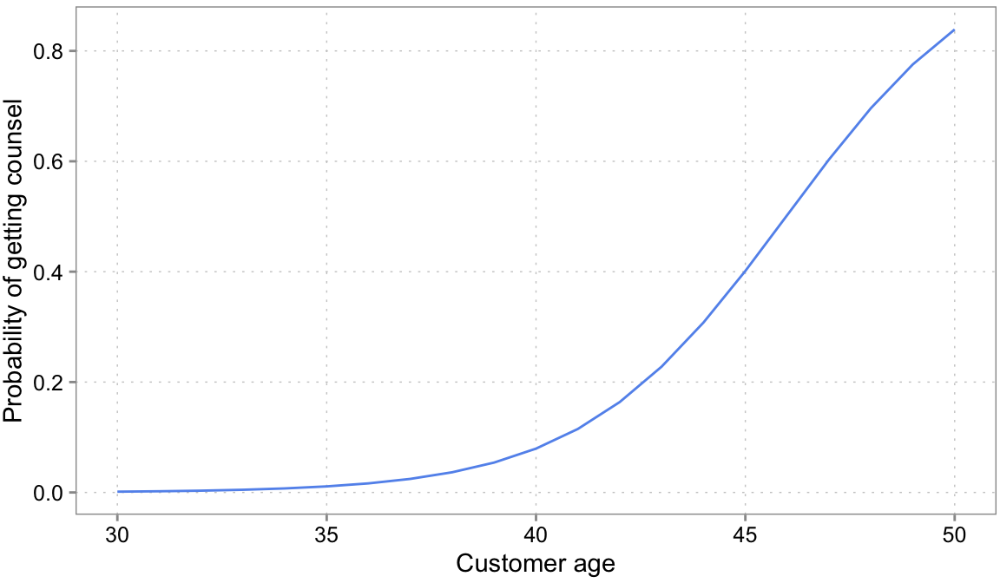

[1] -6.81405021 0.29080315 -16.64506129 -16.93622258 -19.55388221
[6] 27.82578770 -2.12722250 -4.42818912 6.06723243 -4.86329299
[11] -12.99773334 3.66039111 -15.46757532 0.15252543 -0.47744402
[16] -3.97635456 -5.01853836 -21.89194429 -4.70215525 5.51044371
[21] -1.93933150 4.45463912 -0.39409296 18.12015075 -20.29820415
[26] -5.13356070 -5.03222157 2.08585323 -9.37122698 -12.85983170
[31] -4.86984684 3.48049542 -0.02823887 7.00464237 -17.87917138
[36] -4.87859963 -7.17129903 10.38264712 -18.20612595 17.46602851
[41] 8.98895014 13.38321090 -16.12558303 -1.94650403 4.71490692
[46] 3.92105297 -7.14457750 -7.37191957 -18.61520235 -14.397774364 Diagnostic Analytics
4.1 Learning goals
- Critically analyze identified data patterns
- Evaluate the association between important decision variables
- Evaluate business decisions and refine critical assumptions to improve decision-making by using advanced methods to analyze business data
4.2 What is diagnostic analysis?
Diagnostic analysis seeks to answer the question of why a particular event or outcome happened by uncovering the underlying factors, relationships, or determinants that led to the observed data pattern. This understanding can help decision-makers identify the root causes of issues, determine the key drivers of success, and thus guide future decision-making.
Diagnostic analysis is a natural extension of exploratory analysis—the identification of data patterns (Chapter 3). While exploratory analysis focuses on discovering trends, patterns, and relationships in the data, diagnostic analysis goes a step further by investigating the reasons behind those patterns. Consider the following question: Why are some business units more productive than others? By conducting diagnostic analysis, analysts can investigate the factors contributing to productivity differences among business units. Some potential reasons could be unit-specific competitive advantages, management styles, resource allocation, employee skills, company culture, or even measurement issues. In this case, diagnostic analysis techniques provide a principled way to disentangle many potential reasons and better understand the reasons for productivity differences. And of course, the insights gained from the analysis could in turn be employed to develop targeted strategies to improve overall firm performance.
Another example of a question lending itself for diagnostic analysis is: What customers reacted well to a marketing campaign? Analyzing differences in customer responses to marketing campaigns allows analysts to identify which customer segments reacted positively and why. This information can be used to tailor future marketing efforts, improve targeting, and increase the return on investment for marketing initiatives. Understanding the drivers of customer behavior can also inform product development, pricing strategies, and customer relationship management efforts.
4.3 Diagnostic analysis requires a bit of causal reasoning
A diagnostic analysis often requires more advanced statistical techniques than those used in exploratory analysis. Even more importantly, it requires an even stronger reliance on mental models. This is because mental models are required to design and interpret analyses able to speak to “why” questions. As a simple example, suppose we stumble upon a survey that finds a positive relation between respondents being married and respondents self-reported happiness score. What drives this relation? Is it that marriage makes people happy? Or that happier people are more likely to get married? Or is there even a third explanation (both variables are correlated with age). Analyzing data with the goal of answering “Why?” and “What drives…?” questions requires even more recourse to models that represent the relationships between variables and potential causal factors. The same holds for the development of the analysis itself. We need a model to guide the selection of relevant variables, the choice of appropriate statistical techniques, etc.
4.3.1 The importance of assumptions in causal reasoning
Before proceeding, we want to offer a word of caution. “Establishing causality” is often considered the gold standard in decision-making, as it allows for a better understanding of cause-and-effect relationships, which can lead to more effective policies and interventions. It is also impossible because every analysis rests on untestable assumptions. Even in a randomized experiment, analysts have to make assumptions about proper measurement of often difficult to define and measure constructs.
When data is not arising from a randomized experiment (i.e., all real world data), decision-makers face even more challenges when trying to infer the causes of patterns from data. Confounding, endogenous selection issues, and disagreement about the correct mental model are all issues that make it difficult to distinguish between correlation and causation. Especially in a complex and dynamic business environment we face the issue of multiple correlated factors that influence the outcomes of interest. Disentangling these factors to isolate relations is challenging.
The role of theory and hypothesis development thus becomes even more crucial. Theory and hypotheses serve as the foundation for reasoning about the underlying mechanisms and relationships between variables. Developing a well-thought through mental model allows decision-makers to make more informed assumptions and predictions about the potential outcomes of their policies. A good model makes it easier to develop useful hypotheses. Likewise, mental models guide the collection and analysis of data by specifying the expected relations between variables. Finally models help to identify potential confounders and biases.
In sum, it is crucial for any decision-maker to be very clear about what the mental model and the in-built assumptions are that guide any diagnostic analysis. Only with such an understanding can the analysis be directed and results be analyzed.
4.4 Developing a mental model
A mental model is a conceptual framework that represents the relationships between variables and potential causal factors. A mental model represents how different elements in a system are interconnected and how they influence each other. In the context of business relationships, mental models can help decision-makers better understand complex dynamics and make more informed decisions.
Consider the example of customer churn in a subscription-based business. The first step in developing a mental model involves identifying the key variables that are relevant to customer churn. These variables might include factors such as product quality, quality of customer support, pricing, and competitor offerings. This step of first identifying key determinants is essential, because it helps you focus the analysis on the most relevant factors.
After identifying the key variables related to customer churn, the next step is to reason about the relations between these variables. This involves reasoning about how changes in one variable might affect other variables in the system. For example, how does an increase in prices impact the likelihood of a customer churning? Or how does the quality of customer support influence the likelihood of churn? By modelling these relations, we develop the underlying structure of the problem. We need this structure for diagnostic analysis. As we will see in examples later, without it we would basically interpret correlations blindly and at great peril.
The more expert knowledge we have in an area, the more we can already resort to our experience to build mental models. Still, do not forget to reason about variables and patterns uncovered via the preceeding exploratory analysis. Often new insights were generated at that step. Now, for a more systematic approach, we recommend trying to take each step one at a time to not get off track, and evaluate after each step whether you believe you completed the respective step. First, list all variables that you believe may be connected with your variable of interest that you want to explain and that popped up as interesting during the exploratory stage. Then describe the nature of the relations between the variables. We actually encourage you to draw a diagram. A visual representation of your mental model is often a great help for organizing your thoughts, critically analyzing then, and communicating them to others. The example below illustrates the point that text only may not be enough:

Source: Schaffernicht (2017)
Let’s go back to our customer churn example. With regard to our key variable of interest, customer churn, we hypothesize the following:
Quality of customer support is negatively associated with customer churn (because better customer support quality makes customers happy, and they are less likely to leave).
Product quality is negatively associated with customer churn (because higher product quality makes customers happy, and they are less likely to leave).
Competitor offerings are positively associated with customer churn (because interesting offers from competitors might trigger our customers to switch to our competitors).
Price is positively associated with customer churn (because customers do not like to pay more, and they are more likely to leave).
Product quality is positively associated with price (because higher quality is usually costly, sales prices need to be higher as well).
Competitor offerings are negatively associated with price (because of the pressure in the market and the offer by our competitors, we might need to reduce our prices).
It is easy to loose the bigger picture and a quick sketch makes our reasoning much more transparent:

And now you are ready to test your mental model against real-world data and observations to ensure its accuracy and relevance. The sketch (as we will explain later) also already tells you that you cannot analyze the relation between churn and price without holding the influence of product quality and competitor offerings fixed! Something that your analysis of a price effect will need to do, if your theory is correct. The example thus highlights, why having a mental model is essential as basis for any decisions you want to make. Without a clear idea of why certain variables are associated, you will not be able to interpret any results that your analyses will provide you. It needs sound theoretical reasoning to give meaning to your results.
Developing a mental model is an iterative process, where the model is continuously refined based on the insights gained from the analysis. As new relations and factors are identified, the mental model can be updated to better represent the true underlying structure of the data. As new information emerges or the business environment changes, update your mental model to reflect these developments. This iterative process allows for a deeper understanding of the factors influencing, for example, customer churn and more effective decision-making regarding this issue.
4.5 There is no such thing as chance
Before diving into the details of analyzing why questions, we need to clarify some basics. You might have heard phrases like: “This relation between x and y is unlikely due to chance”. What this means, is that the analyst believes the pattern observed in the data between x and y would also be present in general and not just in this particular data set. That it is generalizable. But how could “chance” (or “noise”) even create a pattern? What does this mean?
To understand what is actually meant by randomness or chance in our context, think of a coin flip. We usually assume the chance of a coin landing heads or tails to be even (50% it lands heads and 50% it lands tails). We often say: the chance of a coin landing heads or tails is purely random. Notice though, that randomness here is a statement about our ignorance, not a property of the universe. We know the physics of a coin flip quite well. If we could measure the angle of the coin flip, the wind around the coin, the distance to ground, etc. We could combine our knowledge with the measure to built a prediction model and estimate the probability of the coin landing heads. We would very likely do much better than 50%. Randomness is thus simply due to the fact that either, we have not measured all determinants of the outcome (e.g., coin lands heads), or we do not even know enough about the problem to specify the determinants with certainty (a mental model question). In regression models, all the unmeasured and unmodelled influence are packed into what is called an error term. The following is a typical regression equation, specifying a linear relation between \(y\) and \(x\):
\[y = 1 + 2 * x + u\] The \(u\) is the error term. It captures all the other things that also influence \(y\) and which we didn’t care to model and measure explicitly. The fact that there will be always an error term—we can never hope to name and measure all influences of even simple problems—is the source of “chance” patterns.
The following simulation tries to illustrate the issue. We draw 50 x variables at random. Its values are:
We then we draw some other influences at random, pack them into an error term \(u\) and compute a \(y\) variable according to the equation above \(y = 1 + 2 * x + u\). We do this 20 times, but we always use the same \(x\) values above. Importantly, this means that the true slope for all 20 samples is 2. If you need an example, think of 20 surveys where each time 50 people were surveyed about how happy they are (\(y\) = happiness). The survey firm tried very hard to always get the same \(x\) distribution (say x is age of the respondents), but it can obviously never find exactly the same type of people. Because people of the same age are still very different, the error term \(u\) will always differ quite a bit among these 20 surveys. Figure 4.3 shows how much the sample relation (the slope) between x and y varies between the 20 surveys:
Remember the slope underlying the relation between x and y for all 20 samples is 2! All the variation you see here in slope (some are even negative!) is due to the unmeasured influences in \(u\). Remember we always used the same x values. If you pay careful attention, you can see that the dots in the plot only move up and down. The \(x\) values are fixed. It is thus the changing amounts of \(u\) that are added to x to arrive a \(y\) that camouflage the true relation. This is what people mean when they say a relation can be due to chance.
The “chance” of chance patterns is thus higher when there is a lot of unexplained variation of the outcome of interest left. The best remedy against this is: more data. In Figure 4.4, we start with a sample of 50 observations and increase it step by step by 10 observations up to a maximum of 500 observations.
Note how the regression line becomes more and more certain what the relation could be (it slowly converges to 2).
Let’s consider an example from the business world to illustrate again what to look out for. Suppose you are a sales manager at a retail company and you want to determine if sales performance varies significantly between two groups of sales representatives: those who work weekdays (Group A) and those who work weekends (Group B). After analyzing the data, you find that Group B had, on average, 20% higher sales than Group A. However, you need to determine if this difference is due to the different work schedules or if it could have occurred by chance. Given all the other influences that might determine sales, it is probably not unreasonable to be skeptical that this pattern might be related just to differences in people. We thus need some protocol or workflow to decide how to interpret this pattern. One such workflow are classical statistical hypothesis tests, which we discuss next.
4.6 Hypothesis testing
Hypothesis testing is an extension of the logic we used above to provide intuition for chance patterns in the data. More formally, it is a statistical procedure used to make inferences about a population parameter based on a sample drawn from a population. Population just means: all relevant units of interest. The sample is then those units we have data on. A population parameter is then an unknown parameter describing a relation of interest, derived from our mental model. In Figure 4.3 the population parameter (technically unknown) was a slope parameter between y and x of 2. The sample estimates (the blue line that keeps jumping around) is our sample estimate of that population parameter. And as Figure 4.3 shows, it can be quite off sometimes.
The problem that hypothesis testing tries to deal with is this: suppose that our sample estimate of the slope parameter is 0.3, what can we learn about the population parameter (in our example: 2, but again, we wouldn’t know that normally). It’s main component is a hypothesis concerning what the population parameter is, often called the null hypothesis. For example, we could pose a null hypothesis (H\(_0\)) of no-relation (the slope is hypothesized to be zero). However, a null hypothesis could also be: the slope is 15. We decide what hypothesis to test. Let us stick with H\(_0\): the slope is zero. The “testing” then involves whether the data is more or less consistent with our chosen null hypothesis. Intuitively, if there is a lot of unmeasured influences in \(u\), then a slope of 0.3 is probably not unrealistic to occur by chance (again, see Figure 4.3 for how much a parameter can change from sample to sample). Classical hypothesis testing formalizes this intuition and condenses it into two numbers, a chosen significance level and a derived p-value (or equivalently a confidence interval). Here is the thought experiment behind it.
Suppose we would run 1,000 experiments and each time record the slope. Then we count how often we see certain magnitudes. Given our null hypothesis of the slope being 0 and an estimate of the amount of unexplained influence that lead to variation around 0, we would expect a histogram like the left one in Figure 4.5:
If you look at the left plot, the chance of observing a slope of +/- 0.3 is quite high. We would observe a lot of counts in this range, if H\(_0\) would be true. When seeing a 0.3 slope, we would thus not be able to rule out that a slope value of 0.3 is due to chance, and thus not be able to rule out that the pattern is due to chance. But, because we simulated the date, we know that it would be mistake to conclude that the pattern is due to chance. The true slope is different from 0; it is 2. As shown on the right plot of Figure 4.5, we are less likely to draw a slope value of 0.3 when we get a sample from the true distribution (but it is not unlikely!).
A p-value and significance level quantify this reasoning. We need to find a cut-off after which we say, “Now, slope values higher than that are too unlikely to be due to a population with H\(_0\) as its parameter”. When choosing such a cut-off, we need to also consider the chance of making a mistake. As we can see in Figure 4.5, there are some unlikely values. E.g., the slope value of 5 is rare under H\(_0\): the slope is zero. But it is not impossible. Still, the chance of making an error is small when we see a value of 5 and say, “ok, the population parameter is probably not zero”. The amount of error we are willing to consider is called the significance value. You can see it in the figure. It is the shaded region in the left plot. The shaded region shows the 97.5 and 2.5 percentile—the most extreme values occurring with 2.5% or less of a chance on both sides. If we get a sample whose slope value lies in the shaded region, we would only expect to see such a value with 5% chance (the chosen significance value) if the true population parameter would be 0. So we would make an error in 5% of the cases when deciding to reject H\(_0\). Similarly, the p-value is the chance of seeing a slope value as the one observed in the sample if H\(_0\) is true (and the regression model is correct). If it is below our chosen significance level (our chosen maximum error level), we reject H\(_0\) in favor of the alternative.
The actual mathematics of computing p-values, test statistics, and so on are very important. However, these are covered in detail in any standard regression textbook and we do not see a lot of value in repeating them here. Instead we focused on the intuition. We hope it has become clear that hypothesis testing is in fact a decision making framework. One that tries to control a certain error rate with the significance level: The chance of incorrectly rejecting a hypothesis.
In summary, the general steps involved in hypothesis testing thus are:
Formulate the null and alternative hypotheses: Clearly state the null hypothesis (H\(_0\)). The alternative H\(_A\) is usually that that the population parameter is not equal to the population parameter. For example, H\(_0\): There is no difference in sales performance of weekday- and weekend-workers. H\(_A\): There is a difference in sales performance of weekday- and weekend-workers. There are also of course, directional hypotheses, such as the population parameter is greater than 0. The same logic applies to them.
Choose an appropriate significance level (\(α\)): It is the error level we allow ourselves; the point at which we say, values that occur with a probability of \(a\) or less we consider to not arise from H\(_0\). A common choice for \(α\) is 0.05, indicating a 5%. But that number is to some extent ad-hoc. Think carefully about what it should be in your application.
Select a suitable statistical test: Depending on the research question, data type, and assumptions, choose a statistical test (e.g., t-test, chi-square test, ANOVA) to analyze the data. We have not talked much about this yet. We will talk more about it in the exercises.
Calculate the test statistic and p-value: Apply the selected statistical test to the sample data and calculate the test statistic and corresponding p-value. Let’s say we find a p-value of 0.02. This means that there is only a 2% probability of observing a difference as large as the one we found (or larger) if the null hypothesis were true (i.e., if there was no real relation between the work schedule and sales performance).
Compare the p-value to the chosen significance level (\(α\)): If the p-value is less than or equal to \(α\), reject the null hypothesis in favor of the alternative hypothesis. If the p-value is greater than \(α\), fail to reject the null hypothesis, meaning there is not enough evidence in the data to rule out H\(_0\). Note: When you cannot reject H\(_0\) it does not mean that H\(_0\) is true! It simply means, we cannot rule it out. Absence of evidence is not the same as evidence of absence.
4.7 The Regression framework
We basically introduced half of what a regression analysis is about already in the preceding two sections. Regression analysis is a statistical method used to model the relationship between a dependent (response) variable and one or more independent (predictor) variables. It is an incredibly powerful tool in any data analysts toolbox. In addition, it provides a great teaching aid where we can introduce many important concepts that generalize to all other analysis settings. To do so we start with the difference between correlation coefficients and coefficients in a regression model.
4.7.1 Revisiting correlations
In Chapter 3, we touched upon correlations. A correlation coefficient only assesses the strength of an assumed linear relationship in a sample—how linear it is. It does not tell us anything about the magnitude of the relation. If we want to learn something about the magnitude of the linear relation—and maybe compare it to the magnitude in other settings or other variables, we need a regression model.
To illustrate, we use an example of a retail company that analyzes the performance of its employees at each branch. The company wants to understand if there is a correlation between average employee tenure at the branch level and the branch profit they generate.1 The company collected data on the number of months an employee works for a branch and the total profit of the respective branch. We start our analysis by calculating the correlation coefficient between these two variables. We are first interested in the strength and direction of a possible linear relationship. Similarly to earlier, we would have two competing hypotheses:
H\(_0\): There is no significant association between employee tenure and profit
H\(_A\): There is a significant association between employee tenure and profit
To determine whether this correlation is “not by chance,” the company could perform a statistical test to determine if the observed correlation coefficient is statistically significant (using the correlation:: R package).
correlation(d4[, c("profit", "employee_tenure")])| Parameter1 | Parameter2 | r | CI | CI_low | CI_high | t | df_error | p | Method | n_Obs |
|---|---|---|---|---|---|---|---|---|---|---|
| profit | employee_tenure | 0.2576789 | 0.95 | 0.0326251 | 0.4578634 | 2.278555 | 73 | 0.0256203 | Pearson correlation | 75 |
This test would compare the observed correlation against what would be expected if there were no relationship between the two variables (i.e., the correlation is purely random). We can again use a t-test.2 The results present a correlation coefficient of 0.26 and a p-value of 0.026. This implies there is indeed a weak positive correlation (r = 0.26) which is significant (p-value of 0.026 is smaller than the conventional significance level (α) of 0.10 - in the accounting discipline).
All the correlation coefficient tells us, however, is that there is an indication of a linear relation, not the magnitude of the relation (see this wikipedia graph). If we are interested in that, we need to think about a regression model.
{kind=link}
4.7.2 Regression coefficients
A regression expresses relations between an outcome \(y\) (also sometimes called response or dependent variable) and one or more predictor variables \(x\) (also sometimes called independent variable).
\[y = a + b * x + u\]
A regression coefficient \(b\) represents the estimated change in the dependent variable \(y\) associated with a one-unit change in an independent variable, holding all other independent variables constant. In other words, it quantifies not only the direction of the relationship between the independent variable and the dependent variable, but also its magnitude in unit-changes. For example, a positive coefficient indicates a positive relationship, whereas a negative coefficient suggests a negative relationship.
Figure 4.6 plots a regression line. It shows the slope of the following linear equation:
\[Profit = a + b * employee\_tenure + u\]
Most data tools these days allow you to estimate regressions. Figure 4.7 shows regression output, estimating the line above, for a random sample of branches using excel. Below you find R output (using the jtools:: summ function because it creates cleaner summaries).

m1 <- lm(profit ~ employee_tenure, data = d4)
summ(m1, confint = TRUE)MODEL INFO:
Observations: 75
Dependent Variable: profit
Type: OLS linear regression
MODEL FIT:
F(1,73) = 5.19, p = 0.03
R² = 0.07
Adj. R² = 0.05
Standard errors:OLS
-------------------------------------------------------------------------
Est. 2.5% 97.5% t val. p
--------------------- ----------- ----------- ----------- -------- ------
(Intercept) 258178.44 232639.45 283717.43 20.15 0.00
employee_tenure 1301.74 163.14 2440.34 2.28 0.03
-------------------------------------------------------------------------The row labeled employee_tenure contains the slope, the \(b\) of the regression model above. It is the parameter of interest here. First, note that the t-value and p value in this row are the same as that of the correlation coefficient. That is true for a simple linear regression with just one variable. The coefficient itself has value of 1,301.74. It is a measure of magnitude. It means that one additional month of average employee tenure is associated with 1,301.74 euros more in branch profits. This is the slope of the line in Figure 4.6. Do not be too excited about the magnitude however. Looking at the confidence interval, we can see that there is a lot of uncertainty about the actual magnitude (The 95% range is from 163 to 2,440). 1,301 is the best guess, but not a great guess.
The intercept (also known as the constant or the y-intercept) is the value of the dependent variable when all independent variables are equal to zero. It simply represents the point where the line intercepts with the y axis and usually does not have an interesting interpretation. In this case for example, do we really care that of a branch with an average tenure of zero months, the average profits are 258K euros?
Another feature of fitted regressions is that one can use them for (linear) predictions. If you want to make a prediction about the change in branch profits for let’s say a branch with an average employee tenure of 12 months, we simply use the regression formula and plug in the estimated coefficients: 1,301 * 12 + 258,178 = 273,790, i.e., the predicted incremental profit after 12 months is 15,612 Euros
4.7.3 Isolating associations via multiple regressions
The real use case for linear regression models is not assessing the magnitude of one single variable. It usually is either of two things: For diagnostic analysis it is the ability to estimate a linear association between the outcome \(y\) and a variable of interest \(x\) while holding the influence of other variables (sometimes called covariates) fixed. For prediction tasks it is the ability to make predictions taking a multitude of variables into account. This is the domain of multiple linear regression analysis. It is a straight-forward expansion of the one-variable case.
\[y = a + b_1 * x_1 + b_2*x_2 + b_3 * x_3 + ... + u\]
We will focus on the reasons for including multiple \(x\) variables into regression for diagnostic purposes and cover the prediction case in the next Chapter 5. Generally, there are two reasons for why we would want to include a variable into a regression for diagnostic purposes:
If two variables \(x_1\) and \(x_2\) are related and we want to isolate the association of one with \(y\) while holding the other one fixed.
To take out unmeasured influences out of the error term and thus improve the precision of our coefficient estimates. Remember from Figure 4.3 that regression slopes bounce around more from sample to sample (are less precisely estimated), if there is a lot of unmeasured influences left in the error term. Including big determinants of \(y\) into the regression takes them out of \(u\) and thus helps against this.3
Why would one do either of these two steps for diagnostic purposes is best explained by example. Put yourself into the shoes of a business controller at a retail store chain and doing some exploratory analysis you notice that there is considerable variation in retail store performance in a certain region. You want to figure out the reason for that (diagnostic analysis).
Before you start throwing data at a regression, you do the smart thing and first come up with a first mental model of what should drive store revenues. It looks like this:
Your data (stored in a data.frame called d5) looks like this:
| StoreID | foot_traffic | sick_calls | staff | revenues |
|---|---|---|---|---|
| 1 | 143 | 1 | 4 | 31839 |
| 2 | 216 | 2 | 8 | 48804 |
| 3 | 78 | 4 | 1 | 17631 |
| 4 | 184 | 4 | 6 | 41208 |
| 5 | 214 | 2 | 7 | 48516 |
| 6 | 214 | 1 | 9 | 48747 |
revenues is weekly revenues, foot traffic is the number of customers per week. sick calls is how many employees called in sick that week. staff is how much sales personnel was working (not sick) during the week. You think that for your shops the amount of staff is important. But you also know that if a store is busier, you staff more sales personnel. So there is a direct connection. Just looking at the relation between revenues and amount of staff will thus be contaminated by foot traffic. The coefficient might just pick up that stores with more staff are busier stores. You want to know what the importance of staff is, holding foot traffic (how busy the store is) fixed. Stated another way, foot traffic is a confounding variable for estimating the relation between number of staff and revenues. You can see that in Figure 4.8. According to your mental model, foot traffic has an arrow going into revenues and an arrow going into staff. It causally influences both (you think). Thus you need to hold its influence constant to have a chance to estimate the direct arrow going from staff to revenues. Multiple regression is one approach to do so.
Here is what would happen if we would ignore the confounding influence of foot traffic. We first estimate a simple regression of store revenues on number of staff working.
m2 <- lm(revenues ~ staff, data = d5)
summ(m2, confint = TRUE)MODEL INFO:
Observations: 28
Dependent Variable: revenues
Type: OLS linear regression
MODEL FIT:
F(1,26) = 13.79, p = 0.00
R² = 0.35
Adj. R² = 0.32
Standard errors:OLS
-----------------------------------------------------------------
Est. 2.5% 97.5% t val. p
----------------- ---------- --------- ---------- -------- ------
(Intercept) 19774.52 9653.48 29895.56 4.02 0.00
staff 2604.77 1163.11 4046.44 3.71 0.00
-----------------------------------------------------------------We see a large and significant coefficient on staff working. One more staff working in that week is associated with 2.605 weekly revenues on average. However, your mental model in Figure 4.8 suggests that this number is incorrect. The number of staff is itself determined by foot traffic, so the 2,605 is likely partially driven by stores with higher foot traffic. We put foot traffic itself into the regression now.
m3 <- lm(revenues ~ staff + foot_traffic, data = d5)
summ(m3, confint = TRUE)MODEL INFO:
Observations: 28
Dependent Variable: revenues
Type: OLS linear regression
MODEL FIT:
F(2,25) = 17526.33, p = 0.00
R² = 1.00
Adj. R² = 1.00
Standard errors:OLS
--------------------------------------------------------------
Est. 2.5% 97.5% t val. p
------------------ -------- -------- --------- -------- ------
(Intercept) 761.44 332.92 1189.97 3.66 0.00
staff 352.95 295.45 410.45 12.64 0.00
foot_traffic 209.98 207.12 212.84 151.31 0.00
--------------------------------------------------------------All of a sudden the coefficient drops down dramatically to €352 weekly revenues per staff member. This change is as expected if foot traffic is indeed a confounding influence for the staff variable.4
The main takeaway here is: one big advantage of multiple regression is that it allows you to examine the role and magnitude of individual determinants while holding others fixed. As we saw in this example, it can really matter to do so. If we would not have included foot traffic, we might have gotten the impression that staff members are way more important to store performance than they really are.
But notice, we made the judgment call to include foot traffic based on a mental model. Repeating our call from above, we need mental models to know which variables to include and when not. Notice for example that we have a variable called sick_calls in our dataset. what happens if we include this variable into the our regression model:
m4 <- lm(revenues ~ staff + foot_traffic + sick_calls, data = d5)
summ(m4, confint = TRUE)MODEL INFO:
Observations: 28
Dependent Variable: revenues
Type: OLS linear regression
MODEL FIT:
F(3,24) = 11217.80, p = 0.00
R² = 1.00
Adj. R² = 1.00
Standard errors:OLS
---------------------------------------------------------------
Est. 2.5% 97.5% t val. p
------------------ -------- --------- --------- -------- ------
(Intercept) 755.95 250.81 1261.08 3.09 0.01
staff 353.42 290.76 416.09 11.64 0.00
foot_traffic 209.97 206.98 212.95 145.11 0.00
sick_calls 2.58 -115.25 120.41 0.05 0.96
---------------------------------------------------------------Things barely change. But that doesn’t mean that sick calls do not have an influence. They do! They reduce the number of staff working in that week and thus affect revenues. But, controlling for staff working, sick calls cannot affect revenues anymore! Your mental model tells you that including this variable into the regression does not add anything. This is a benign example, in some cases adding a variable can distort all the other variables’ coefficients. All of this is to say that we need strong theory and mental models to analyse determinants.
4.7.4 Some terms to know
Let’s now also take a closer look at some other information in typical regression tables.
Standard errors measure the variability or dispersion of the estimated coefficients (remember Figure 4.3). They provide an indication of how precise the estimated coefficients are. Smaller standard errors imply that the coefficients are estimated with greater precision and are more reliable, whereas larger standard errors suggest less precise estimates and more uncertainty. And uncertainty is something we need to live with as we are only estimating the coefficient of a sample.
The T statistics (t) are calculated by dividing the estimated coefficient by its standard error and help you determine the statistical significance of the coefficients. They are test statistics for a default hypothesis test H\(_0\): the coefficient is zero in the population. In essence, the t statistic here measures how many standard errors the coefficient estimate is away from zero. A large t statistic indicates that the coefficient is unlikely to have occurred by chance, suggesting that the independent variable has a significant association with the dependent variable. (see Figure 4.5).
We explained p-values above, but for completeness: P-values are associated with t statistics and are used to test the null hypothesis that the true population coefficient is zero (i.e., no relationship between the independent and dependent variables). A small p-value (typically less than 0.10) indicates that you can reject the null hypothesis, suggesting that the independent variable has a significant association with the dependent variable. On the other hand, a large p-value implies that there is insufficient evidence to reject the null hypothesis, meaning that the relationship between the independent and dependent variables may not be statistically significant (and therefore “by chance”).
The confidence intervals provide a range within which the true population coefficient is likely to lie with a certain level of confidence, often 95%. If the confidence interval does not include zero, it suggests that the coefficient is statistically significant at the specified confidence level. Conversely, if the confidence interval includes zero, the coefficient is not considered statistically significant. The chosen significance level matches the confidence interval: if you decide to use a significance level of 5%, then the corresponding confidence interval is 95% (see regression output). You usually have to specify this explicitly in your statistical package.
R\(^2\). The r-squared is a measure of variation in the outcome \(y\) explained by the estimated linear combination of the \(x\) variables. It is sometimes used as a measure of model fit or quality. But that is dangerous interpretation. We will say more about the r-squared later.
4.7.5 Relative importance of variables
It is tempting to base the relative importance of variables on the coefficients obtained from the regression analysis. And one can do so, but only with extreme caution.
First, as our example with staff and foot traffic shows. Any interpretation first and foremost rests on the regression model capturing confounding effects. This also requires that our mental model is not too far off reality and that we can approximate relations in a linear way (e.g., after transformations)
Second, often, the units of measurement usually vary between the variables, making it very hard to to directly compare them. For example, the meaning of a one-unit change in distance is different from a one-unit change in weight. There are ways around this, but in complicated situations the whole idea of comparing coefficients in a table is dangerous and often a big mistake. Be very careful when trying to do this. The reason is the same as with the foot traffic and staff example. In complicated situations a complicated regression equation with many variables is often required to isolate the association between \(y\) and just one \(x\)! All the other variables (called control variables) are in there just to unbias the coefficient on that one \(x\). Thus the coefficients on the control variables are not guaranteed to be unconfounded or easily interpretable.5 If you are sure (based on your mental model) that both coefficients can indeed be interpreted properly, one approach to assess the relative importance of variables is to compare the standardized coefficients in a multiple regression model. Standardized coefficients are the estimates obtained when all the variables are standardized to have a mean of zero and a standard deviation of one. By standardizing, the coefficients are expressed in units of standard deviations, which allows for a direct comparison of the effect of each predictor on the dependent variable. As mentioned in Chapter 3, if you standardize the original data, this can lead to complications. Instead, you can simply take the regression output and multiply the unstandardized coefficient with the standard deviation of the respective variable.
Another common approach to assess the relative contribution of each variable to the R-squared (more on the R-squared below) is calculating the incremental R-squared. To achieve this, you first run the regression with all independent variables and note down the R-squared (0.4962 in our multiple regression above). To determine the incremental contribution of employee tenure, you exclude this variable from the regression, run it again and note down the new R-squared, which is 0.4247. The difference is the incremental R-squared of employee tenure, that is, 0.4962 - 0.4247 = 0.0715. Repeating this for service quality would yield an incremental R-squared of 0.1316, again ranking the relative importance of service quality higher than employee tenure. We like this approach even less though. Again, the issue is complicated. Interdependence between variables makes it very difficult to judge whether a lower increase in R-squared is meaningful or not. Often the order of variables matters a lot as a result of that. Also remember the example with revenues being explained by foot traffic, staff working, and sick calls. If you would want to estimate the impact of sick calls, you would have to throw out the staff variable in order to unblock the path between sick calls and store revenues. That will drastically lower the R-squared because staff working in our simulation explains revenues quite well. It explains y much better than sick calls. Sick calls has no incremental R-squared to staff working. But for our question of interest, that is irrelevant. Again, the main message is, when comparing R-squared contributions, carefully examine your mental model if the comparisons are apples to apples or even sensible.
4.8 What is a “good” (regression) model?
This is almost a philosophical, but nevertheless a very important question. When building a model to answer a business question, you need some criteria to say: “This model is good enough, let’s run with it”. Some often used criteria for this purpose are dangerous. We recommend to let yourself be guided by theory first and out-of-sample prediction accuracy second. Only have a cautious look at measures like the in-sample R-squared.6
The R-squared, also known as the coefficient of determination, is a measure that represents the proportion of the variance in the dependent variable that can be explained by the independent variables in a regression model. It “quantifies the goodness-of-fit” of the model to the sample by comparing the explained variation to the total variation in the sample. We emphasized fit to the sample to already highlight one trap when interpreting an R-squared. It is usually an in-sample measure. One can easily build a bad model with lots and lots of variables fitting noise, which will have a high R-Squared (R\(^2\) ranges from 0 to 1). Models that are overfit (see Chapter 5) have high R\(^2\) that are not indicative of their fit to new samples. The standard R\(^2\) increases with the addition of more variables, regardless of their relevance. Therefore, we typically look at the adjusted R-squared. The adjusted R-squared is a modified version of the R-squared that takes into account the number of independent variables and the sample size. It can help to penalize overly complex models, making it a more reliable measure of goodness of fit, but even the adjusted R-squared suffers from the in-sample problem.
R\(^2\) is also not a good measure of model quality when the goal is to identify a relation of interest. In that case, we do not need to explain a lot of variation necessarily. On the contrary, if we find a proxy for a determinant of interest that does not explain much of \(y\), but which is unconfounded by other things, then we will get a cleaner estimate of the coefficient and a low R\(^2\). That is fine, in this case, we care more about the clean estimate of the coefficient.
So, what is a good model? We believe it depends on the purpose of your analysis. If it is diagnostic analysis, a good model can again only be assessed via theory: your mental models. If the model manages to isolate the variables your care about, blocks confounding influences, etc. it is a good model. If the purpose is prediction, then out-of-sample prediction accuracy is the relevant criteria. A model that fits well on data it hasn’t seen is a much more believable model. We will spend quite some time in Chapter 5 on discussing how to assess this.
4.9 Logistic regression
Next to linear regressions, logistic regressions are the next most often used regression tool. It belongs to the family of generalized linear models (GLM). The main differences between these two types of regression lie in the nature of the dependent variable, the function used to model the relationship, and the interpretation of the results. Linear regression is used when the dependent variable is continuous, meaning it can take any real value within a certain range. Logistic regression is specifically designed for binary dependent variables, which have only two categories or outcomes, such as success/failure or yes/no. This is very useful for determinant analysis like: What determined whether a customer did respond to a campaign (a yes/no outcome).
Because the outcome is binary(0, 1), using a normal linear regression could result in predictions that lie far away from the (0; 1) interval. A logistic regression thus needs to ensure that the outcome can never be below 0 and never above 1. It does so by taking a the linear part of the model (the \(a + b_1*x_1 + u\) part) and pushes it through a function (the so-called logistic function) that pulls large values to 1 and too small values to 0. It gives the relation a characteristic S-shaped curve that maps any real-valued input to a value between 0 and 1 (Figure 4.9). Very useful when modeling probabilities.
The only difficulty that the logistic transformation brings about is that it complicates the interpretation of coefficient magnitudes. That is because the S-curve now makes the relation between \(y\) and \(x\) non-linear. In logistic regression, the coefficients are expressed in terms of the logarithm of the odds ratio, which describes the change in the odds of the event occurring for a one-unit change in the independent variable.
To facilitate interpretation, these coefficients can be exponentiated to obtain the odds ratios, which provide a more intuitive understanding of the relationship between the independent variables and the binary outcome. Let’s consider a hypothetical example to illustrate logistic regression and its interpretation. Assume we are a broker and send an offer around for a counseling on retirement saving. We wanted to know whether older customers were more likely to respond to this campaign. Here is some simulated data and the result of throwing the data into a logistic regression:
set.seed(0374)
# simulating an x variable with 100 random obs ofage between 24 and 58
x = sample(24:58, size = 100, replace = TRUE)
# simulating some probabilities
y = inv_logit(-2 + 0.3 * (x - mean(x)) + rnorm(100, 0, 1.3))
# turning probabilities into a binary 1, 0 variable
y = ifelse(y > 0.5, TRUE, FALSE)
# estimating a model
m5 <- glm(y ~ x, family = binomial(link = "logit"))
summ(m5)MODEL INFO:
Observations: 100
Dependent Variable: y
Type: Generalized linear model
Family: binomial
Link function: logit
MODEL FIT:
χ²(1) = 86.39, p = 0.00
Pseudo-R² (Cragg-Uhler) = 0.79
Pseudo-R² (McFadden) = 0.66
AIC = 49.40, BIC = 54.61
Standard errors:MLE
-------------------------------------------------
Est. S.E. z val. p
----------------- -------- ------ -------- ------
(Intercept) -18.85 4.42 -4.27 0.00
x 0.41 0.09 4.33 0.00
-------------------------------------------------\[log(odds) = log(p / (1 - p)) = β_0 + β_1 * age\]
where p is the probability of coming to the counsel meeting, and odds represent the ratio p / (1 - p).
Plugging in the values from our fitted model, we get:
\[log(odds) = -18.85 + 0.41 * age\]
Now, let’s suppose we want to predict the probability of getting counsel for a 40 year old person. We can use the logistic regression equation to calculate the log odds of passing:
\[log(odds) = -18.85 + 0.41 * 40 = -2.45\]
To convert the log odds to a probability, we apply the logistic function:
\[p = 1 / (1 + exp(-log(odds))) = 1 / (1 + exp(2.45)) \sim 0.08\]
So, the probability of passing of a 40 year old responding to the campaign was approximately 8%.
To interpret the coefficients, we can calculate the odds ratio for the independent variable (age) by exponentiating \(\beta_1\):
\[Odds ratio = exp(β1) = exp(0.41) \sim 1.51\]
The odds ratio of 1.51 indicates that for each year of age, the odds of showing up to the counselling increase by a factor of 1.51, holding all other variables constant. You can use the respective functions in your statistical packages to get at these more intuitive numbers.
For presentations it is often easier though to set all variables \(x_2\), \(x_3\) etc to their average values, plug in relevant values for the variable of interest and plot the change in probabilities. We often found this to be the most intuitive way of presenting the non-linear nature of the \(y\) - \(x\) relations in logisitic regressions. As you can see, after a certain age their is a steep increase in the probability of showing up that you would not have expected based on the coefficients.

4.10 Conclusion
The material we covered in this chapter is quite complex and deep. Rather than focusing on the mechanics we tried to focus on important intuition. We still think it is worth, as you get more and more familiar with the tools to dive deeper into it by practicing. Fully understanding these concepts takes practice. With the tools we introduced here, linear and logistic regressions, many applications will be served and if you will already make a large step forward to data-driven decision-making if you have a rudimentary grasp of them. Particularly to find explanations for why you observe certain patterns in your data. For the purpose of creating predictive models, we will continue to discuss regressions and more advanced models in Chapter 5.
As we perform our investigation at the branch level, average employee tenure implies that the tenure of all employees at the respective branch is averaged. Technically, we need to be careful here. As the average tenure is itself estimated, there is additional noise in our x variable that we should account for. We ignore this in the example, for ease of exposition.↩︎
Meaning the test statistic follows a t-distribution. It is computed a slightly differently than, for example, a differences-in-means t-test. The formula is: \(t_r = r√(n-2) / (1-r2)\)↩︎
There is sometimes a trade-off however. If the variables we take out of the error term are highly correlated with our variables of interest, we create a new problem called colinearity.↩︎
We simulated this data and the true coefficient on foot traffic is 210€ in weekly revenues per weekly customer and the true coefficient on staff is 360€ in weekly revenues per staff member.↩︎
Some call this the “table 1 fallacy”.↩︎
There is also a model F-test, but we ignore that. It is rarely useful for model selection.↩︎